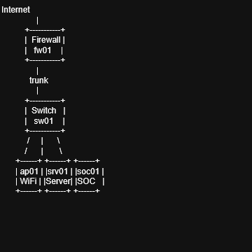
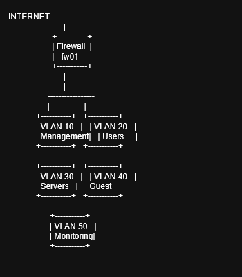
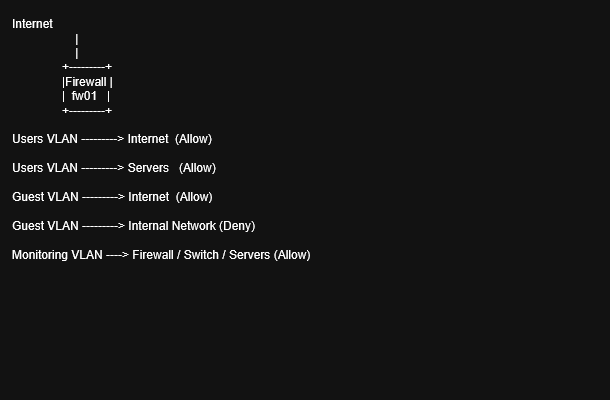

Overview
This project documents a simulated enterprise network environment designed to demonstrate practical network engineering and security concepts including VLAN segmentation, firewall-controlled inter-VLAN communication, centralized policy enforcement, and monitoring visibility.
Topology Diagram
Main high-level network topology.

VLAN Segmentation
The network is segmented into multiple VLANs to separate trust levels and operational roles.
- VLAN 10 – Management
- VLAN 20 – Users
- VLAN 30 – Servers
- VLAN 40 – Guest
- VLAN 50 – Monitoring

Traffic Flow Model
The firewall controls communication between internal zones and the internet.
- Users VLAN → Internet (Allowed)
- Users VLAN → Servers (Allowed)
- Guest VLAN → Internet (Allowed)
- Guest VLAN → Internal Network (Denied)
- Monitoring VLAN → Infrastructure Devices (Allowed)

Infrastructure Components
fw01
Firewall handling segmentation, inter-VLAN routing, NAT, and security policy enforcement.
sw01
Managed switch providing VLAN segmentation, trunking, and endpoint connectivity.
ap01
Wireless access point for user and guest wireless access with VLAN mapping.
srv01
Infrastructure server providing internal services such as DNS, DHCP, or applications.
soc01
Monitoring and logging system for visibility, dashboards, and event analysis.
Documentation
Detailed technical documentation is stored in the repository docs/ directory.
- 01-overview.md
- 02-architecture.md
- 03-topology.md
- 04-ip-addressing.md
- 05-vlan-design.md
- 06-network-flows.md
- 07-security-model.md
- 08-firewall-policies.md
- 09-devices.md
- 10-services.md
- 11-operations.md
- 12-incident-response.md
- 13-controls-mapping.md
- 14-diagram-standards.md